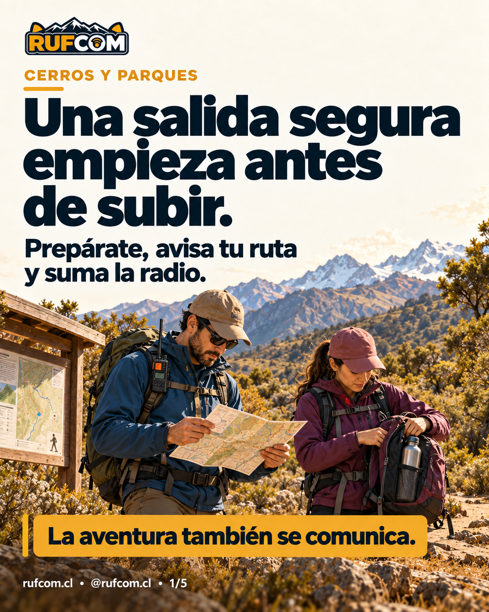

En esta guía
CERROS Y PARQUES · GUÍA RUFCOM
Una salida segura empieza antes de subir.
Prepárate, avisa tu ruta y suma la radio.
La mochila está lista. El cerro te espera. Antes de dar el primer paso, deja algo más preparado: cómo vas a cuidarte y mantener el contacto con quienes van contigo.
No necesitas llegar a la cumbre para vivir una buena aventura. La salida termina cuando todos están de vuelta.
Prepara tu próxima salida ↓
01 · Elige el camino que puedan disfrutar juntos
Revisa la ruta, el clima, las horas de luz y los horarios del parque. El recorrido debe estar al alcance de todo el grupo. Si exige técnicas o equipo que aún no manejas, busca otro camino.
Lleva el mapa disponible sin internet y aprende a consultarlo. Sigue los senderos habilitados y las indicaciones de guardaparques.
Acuerden una hora para dar la vuelta. El cerro seguirá ahí para otra salida.
02 · Que alguien sepa por dónde andas
Deja tu ruta, los nombres del grupo y la hora de regreso a una persona que se quede fuera del recorrido. Acuerden qué hará si no recibe noticias.
Un mensaje sencillo sirve para empezar:
Vamos a [lugar] por [ruta]. Somos [nombres] y esperamos volver a las [hora]. Avisaremos al regresar. Si a las [hora acordada] no tienes noticias, intenta contactarnos; si seguimos sin responder, avisa a emergencia y entrega este plan.
Si cambias el recorrido, actualiza el aviso cuando puedas. Al volver, cierra el plan con un “ya llegamos”.
03 · Una mochila pensada para el camino
Agua y comida para el recorrido. Abrigo y protección contra lluvia, viento y sol. Linterna, botiquín, medicamentos personales y calzado adecuado. Teléfono cargado y respaldo de energía.
No cuentes con encontrar agua potable o señal de celular. Revisa lo que llevas y aprende a usarlo antes de necesitarlo.
Caminen juntos, retiren su basura y respeten las reglas del lugar sobre fuego y cocina.
Cuidar al grupo y al lugar también es parte de la aventura.
04 · La radio tiene sentido cuando alguien escucha
Un “¿cómo van?” puede ayudar a coordinarse en el camino. Para que ese contacto funcione, prepáralo antes de salir:
• Acuerda con quién hablarás, a qué horas y en qué frecuencia autorizada.
• Prueba el enlace y los controles de tu radio.
• Revisa batería, antena y protección contra agua y golpes.
• Si usarás un repetidor, comprueba sus ajustes y acceso.
• Acuerda qué harán si no consiguen comunicarse y prepara otro medio adecuado al recorrido.
Cerros y quebradas pueden cortar la señal. Un repetidor puede ayudar, pero no es un servicio de rescate. Cada persona debe operar según su licencia.
La radio suma al plan. Llevarla no garantiza cobertura ni es motivo para separar al grupo.
05 · Saber volver también es saber salir
Mira el cielo, el sendero y cómo se sienten tus compañeros. Si empeora el tiempo, alguien tiene dificultades o llega la hora de retorno, cambia el plan y regresa a tiempo.
Si pierdes comunicación, mantén al grupo unido y aplica lo acordado. Prueba desde un lugar seguro y despejado, sin exponerte en bordes o laderas buscando señal.
La mejor foto de la salida puede ser la de todos de vuelta.
Si hace falta ayuda, empieza por decir dónde estás
Deténganse en un lugar seguro y contacten a emergencia por el medio disponible. Si logras hablar por radio, pide a quien te escucha que dé el aviso.
Entrega ubicación, qué ocurrió, cuántas personas necesitan ayuda y cómo volver a contactarte. Agrega coordenadas si sabes obtenerlas, nombre del sendero y referencias del lugar.
Aquí [tu indicativo]. Necesitamos ayuda en [ubicación]. Somos [cantidad]. Ocurrió [situación]. Podemos recibir respuesta por [medio]. ¿Puedes avisar a emergencia y confirmar que recibiste la ubicación?
Pide confirmación de que se dio el aviso: recibir una respuesta por radio no significa que un rescate esté en camino. Evita movimientos que agraven la situación y sigue las instrucciones del equipo de rescate.
Antes de echarte la mochila al hombro
□ Conocemos la ruta, el clima y los horarios.
□ Alguien tiene nuestro plan y sabe qué hacer si no avisamos.
□ Llevamos agua, comida, abrigo, luz, botiquín y mapa.
□ Acordamos el ritmo del grupo y la hora de retorno.
□ Probamos la comunicación y tenemos una alternativa.
□ Al volver, avisamos que todos llegamos.
Prepárate, avisa tu ruta y suma la radio.
La aventura también se comunica.